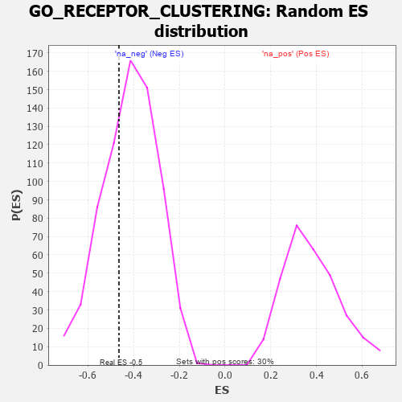

| | | Dataset | 7d |
| Phenotype | NoPhenotypeAvailable |
| Upregulated in class | na_neg |
| GeneSet | GO_RECEPTOR_CLUSTERING |
| Enrichment Score (ES) | -0.46455115 |
| Normalized Enrichment Score (NES) | -1.1191491 |
| Nominal p-value | 0.33095577 |
| FDR q-value | 0.73160857 |
| FWER p-Value | 1.0 |
Table: GSEA Results Summary
 Fig 1: Enrichment plot: GO_RECEPTOR_CLUSTERING
Fig 1: Enrichment plot: GO_RECEPTOR_CLUSTERING
Profile of the Running ES Score & Positions of GeneSet Members on the Rank Ordered List
| PROBE | GENE SYMBOL | GENE_TITLE | RANK IN GENE LIST | RANK METRIC SCORE | RUNNING ES | CORE ENRICHMENT | | 1 | MESD | | | 384 | 0.713 | 0.0408 | No |
| 2 | LRRC7 | | | 2080 | 0.294 | -0.1355 | No |
| 3 | FNTA | | | 2755 | 0.190 | -0.1965 | No |
| 4 | CDK5 | | | 3480 | 0.080 | -0.2775 | No |
| 5 | DLG1 | | | 4860 | -0.169 | -0.4296 | No |
| 6 | RER1 | | | 5139 | -0.235 | -0.4352 | Yes |
| 7 | SSH1 | | | 5254 | -0.258 | -0.4173 | Yes |
| 8 | PICK1 | | | 5265 | -0.263 | -0.3857 | Yes |
| 9 | MAGI2 | | | 5295 | -0.269 | -0.3557 | Yes |
| 10 | DLG4 | | | 5388 | -0.293 | -0.3306 | Yes |
| 11 | GLRB | | | 5776 | -0.398 | -0.3295 | Yes |
| 12 | DLG2 | | | 6126 | -0.513 | -0.3092 | Yes |
| 13 | WDR19 | | | 6796 | -0.812 | -0.2918 | Yes |
| 14 | GRIK2 | | | 7552 | -1.471 | -0.2029 | Yes |
| 15 | GRIK5 | | | 7792 | -2.044 | 0.0225 | Yes |
Table: GSEA details [plain text format]

Fig 2: GO_RECEPTOR_CLUSTERING: Random ES distribution
Gene set null distribution of ES for GO_RECEPTOR_CLUSTERING